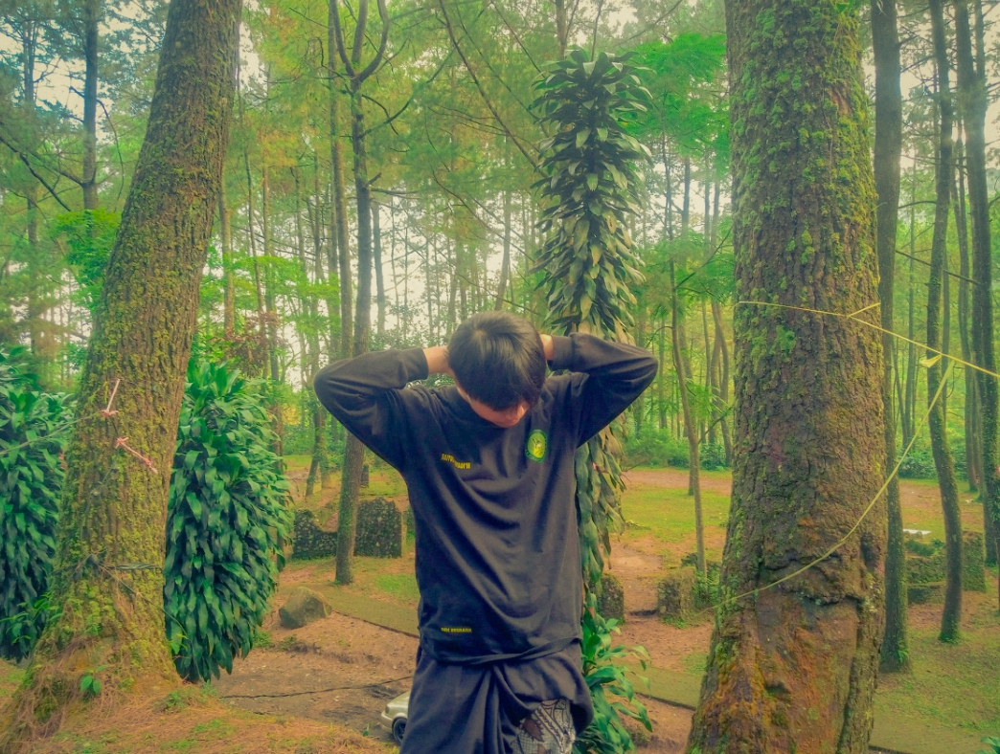

Andi
Nugraha
Network Engineer & Tech Enthusiast
Kerja tuntas itu beda dengan kerja keras.
Siapa Andi, sebenarnya?

Saya Andi Nugraha, biasa dipanggil Ndii, seorang Network Engineer muda berusia 18 tahun dari Bandung yang passionate di dunia teknologi jaringan dan infrastruktur digital.
Bermula dari menjadi seorang blogger pada tahun 2020 lalu berminat pada IT dan melanjutkan pendidikan pada bidang Computer dan Jaringan.
Selalu tertarik juga dengan permasalahan yang menantang, mencari dimana akar permasalahan dimulai lalu menelusuri sampai mana ini berjalan, lepas itu semua mulailah eksekusi.
Dari mana hingga di sini
Setiap langkah membentuk siapa saya hari ini.
Mempelajari bagaimana aplikasi berjalan secara realtime, membuat sistem pengambilan barang dan pengecekan data siswa berbasis web.
Mempelajari dasar Computer bekerja › logika algoritma › praktik pemasangan hardware › implementasi hardware/software › membuat projek sendiri.
Berawal dari blogger lalu mengikuti sebuah team peretas kecil hingga berkeputusan untuk mengambil bidang IT.
Yang sudah saya buat
Pilihan proyek terbaik yang mencerminkan kemampuan dan passion saya.
Wifi Voucher Installation
Pengalaman pertama bermain Mikrotik dan terintegrasi langsung dengan Jaringan juga Website.
Pengambilan Barang Ruang Sarana
Barang yang keluar dan masuk wajib di-transparansi, siswa dan guru menjalin komunikasi terkait kebutuhan dalam pembelajaran siswa.
AI Investigator
Saya sedang bereksperimen di Web 3.0, dengan menggunakan AI sebagai target pembelajaran.
Admin Dashboard
Melayani dan mengatur barang dan harga pada laman pelanggan.
Yang saya kuasai
Teknologi dan tools yang saya gunakan sehari-hari.
Mari berkolaborasi
Punya ide menarik, proyek seru, atau sekadar ingin ngobrol? Pintu saya selalu terbuka.